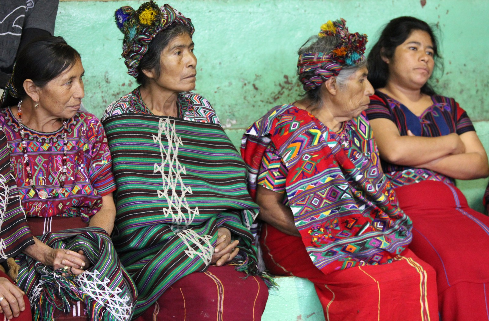

Mesoamérica · História · Cosmologias vivas
Espiritualidade Maia
Tempo, natureza, ancestralidade e comunidade em tradições que atravessam milênios.
A espiritualidade dos povos maias não pertence apenas ao passado. Cosmologias, calendários, narrativas, cerimônias e conhecimentos continuam presentes entre comunidades maias contemporâneas.
Explorar a históriaAntes de começar
Não existe uma única religião maia. “Maia” reúne povos, línguas, cidades, períodos históricos e comunidades diferentes. Uma prática documentada em Yucatán, nas terras altas da Guatemala ou em uma corte do período Clássico não deve ser automaticamente atribuída a todos os povos maias.
Ao longo da página, evidência arqueológica e histórica, tradições indígenas e interpretações acadêmicas são identificadas de forma separada.
O essencial antes da leitura longa
Não existe uma religião única
Povos, períodos e regiões produziram tradições distintas, ainda que compartilhem conexões históricas e linguísticas.
Os maias não desapareceram
Milhões de pessoas pertencentes a povos maias vivem hoje na Mesoamérica; o Smithsonian estima cerca de 7 milhões no século XXI. [1]
Ambiente e espiritualidade se conectam
Milho, chuva, montanhas, cavernas, água, ciclos agrícolas e ancestrais aparecem em diferentes sistemas de conhecimento e ritual.
Literatura é uma chave
Popol Vuh, livros de Chilam Balam, Rabinal Achí, Cantares de Dzitbalché, códices e inscrições preservam fragmentos importantes desse universo intelectual.
Uma tradição com milhares de anos
A espiritualidade maia não surgiu de um fundador nem de um momento único. Ela se transformou junto com cidades, sistemas políticos, agricultura, escrita, guerras, migrações e colonização.
- Antes de 1000 a.C.
Primeiras sociedades
Comunidades agrícolas e redes mesoamericanas estabelecem bases que, ao longo dos séculos, participariam da formação de diferentes sociedades maias.
- Pré-Clássico
Cidades, escrita e cosmologia
Arquitetura ritual, iconografia e calendários se desenvolvem muito antes do auge das cidades clássicas.
- c. 250–900
Período Clássico
Grandes centros políticos registram genealogias, guerras, ritos, divindades, datas e alianças em monumentos e objetos. Tikal preserva inscrições sobre sua história dinástica e conexões regionais. [9]
- Pós-Clássico
Novos centros e novos contextos
Tradições continuam em Yucatán, Guatemala e outras regiões com transformações políticas e religiosas.
- Séculos XVI–XVII
Conquista e evangelização
Guerra, doenças, missões cristãs e reorganizações coloniais alteram profundamente as condições de transmissão cultural.
- Período colonial
Escrita, adaptação e resistência
Textos maias passam a circular também em caracteres latinos; o manuscrito conhecido do Popol Vuh foi copiado entre 1700 e 1715 a partir de tradição K'iche' anterior. [3]
- Séculos XX–XXI
Povos contemporâneos
Línguas, cerimônias, calendários, agricultura, identidade e práticas religiosas continuam sendo transmitidos e reinterpretados.
Um universo conectado
Em diferentes tradições maias, religião, agricultura, política, astronomia, território e vida comunitária não aparecem como áreas totalmente independentes.
Nota metodológica: o diagrama resume relações encontradas em diferentes fontes. Não representa uma cosmologia universal válida para todos os povos maias.
O que estrutura muitas leituras do mundo maia?
Milho
Alimento, agricultura, economia, identidade e matéria de criação em narrativas K'iche'. O Met documenta a centralidade do Deus do Milho na arte maia clássica. [8]
Tempo
Ciclos calendáricos organizam ritos, nomes, agricultura e memória histórica; o calendário sagrado de 260 dias permanece conhecido entre guardiões do tempo K'iche'. [6]
Natureza
Água, chuva, cavernas, cenotes, montanhas e paisagens podem assumir significados sociais e rituais, mas seu papel varia conforme região e período.
Ancestralidade
Genealogias, memoriais, sepultamentos e ritos conectaram linhagens e autoridade; no período Clássico, imagens e objetos também homenageavam ancestrais. [8]
Comunidade
Festas, trabalho, língua, memória e práticas religiosas continuam inseridos em comunidades vivas, e não apenas em sítios arqueológicos.
Popol Vuh: uma janela, não uma “Bíblia de todos os maias”
A Library of Congress descreve o Popol Vuh como narrativa de criação do povo K'iche' da atual Guatemala. O manuscrito sobrevivente mais conhecido foi transcrito por Francisco Ximénez entre 1700 e 1715, provavelmente a partir de uma versão indígena anterior em caracteres latinos. [3]
Criação
Diferentes tentativas de criação culminam, na narrativa, em seres humanos formados a partir de milho branco e amarelo.
Heróis Gêmeos
Hunahpu e Xbalanque enfrentam provas e seres de Xibalba, em uma narrativa de morte, habilidade e transformação.
Xibalba
O mundo subterrâneo aparece como espaço de perigos, relações e provas, não como equivalente direto do “inferno” cristão.
Memória histórica
Genealogias e narrativas sobre grupos K'iche' conectam cosmologia e história social.
Fontes diferentes respondem perguntas diferentes
Não há um texto único que represente todas as tradições maias. O valor está justamente em comparar gêneros, línguas, épocas e condições de registro.
Popol Vuh
Cosmologia, criação, Heróis Gêmeos, genealogias e história K'iche'.
K'iche' · GuatemalaLivros de Chilam Balam
Calendários, história, profecia e conhecimentos Yucatec Maya registrados em diferentes livros coloniais. [5]
YucatánRabinal Achí
Drama dinástico maia do século XV preservado como tradição performática; a UNESCO o reconhece como patrimônio cultural imaterial. [4]
Rabinal · GuatemalaCantares de Dzitbalché
Conjunto de 16 cantos em língua maia yucateca com conteúdos religiosos, sociais e cerimoniais. [7]
YucatánCódices
Calendários, astronomia, divinação e ritual aparecem nos poucos livros maias sobreviventes; a maior parte foi perdida durante a colonização. [10]
Dresden · Madrid · Paris · Códice Maia do MéxicoMonumentos e cerâmicas
Textos hieroglíficos registram datas, dinastias, ritos e guerras e permitem cruzar história política com iconografia.
Período ClássicoO tempo não era apenas uma contagem de dias
Diferentes sistemas calendáricos eram combinados para marcar ritos, nomes, ciclos políticos, observações astronômicas e atividades sociais.
O projeto Living Maya Time, do Smithsonian/NMAI, explica o calendário sagrado de 260 dias e documenta sua continuidade entre comunidades K'iche' contemporâneas. [6]
Os códices também combinam calendários com observações astronômicas. Isso não significa que toda atividade astronômica maia fosse “religiosa” da mesma maneira, mas mostra como categorias modernas podem separar campos que, historicamente, estavam conectados.
Ritual varia conforme tempo, lugar e posição social
Oferendas
Objetos, alimentos, incenso e outros materiais aparecem em diferentes contextos domésticos, públicos, funerários e templários.
Incenso e fogo
Queima ritual e fumaça aparecem em registros arqueológicos e continuam presentes em algumas cerimônias contemporâneas.
Agricultura
Calendários, chuva e cultivo podem se articular a cerimônias comunitárias sem existir uma única “religião agrícola maia”.
Lugares sagrados
Cavernas, montanhas, cenotes, templos e outros espaços assumiram papéis distintos em diferentes regiões.
Sangria ritual
Há abundante evidência arqueológica e iconográfica de práticas de auto-sangria em elites do período Clássico. [12]
Ancestrais
Sepultamentos, memoriais e rituais domésticos ou dinásticos conectaram mortos e vivos em diferentes contextos.
E os sacrifícios humanos?
Sim. Existem evidências iconográficas, textuais e bioarqueológicas de sacrifício humano em determinados períodos e contextos maias. Isso, porém, não autoriza transformar toda espiritualidade maia em uma história sobre violência ritual.
- Religioso
- Ritos, oferendas e cosmologias específicas.
- Político
- Poder, autoridade e legitimação de elites.
- Militar
- Prisioneiros de guerra e demonstrações de domínio em alguns contextos.
Nível de evidência: forte para a existência de sacrifício em contextos documentados; inadequado para generalizar frequência, significado ou prática a todos os povos e períodos.
Quando dois mundos colidiram
A conquista não apagou a espiritualidade maia. Transformou violentamente as condições em que línguas, escritos, autoridades e práticas poderiam continuar existindo.
Perda documental
O Getty destaca que a maior parte dos códices maias foi destruída por colonizadores espanhóis durante campanhas de cristianização. Pouquíssimos exemplares sobreviveram. [10]
Transformação religiosa
Comunidades maias combinaram, recusaram, reinterpretaram e incorporaram elementos cristãos de formas diferentes; “sincretismo” não descreve sozinho toda essa história.

Comunidade em Nebaj, Guatemala, 2013. Foto: Comissão Interamericana de Direitos Humanos, CC BY 2.0.
Os maias não desapareceram.
Povos maias vivem principalmente no México, Guatemala, Belize e regiões vizinhas. O Smithsonian registra uma população maia contemporânea de aproximadamente 7 milhões, e a UNESCO observa que cerca de 30 línguas maias continuam faladas. [1] [2]
- Línguas
- Cerimônias
- Calendários
- Agricultura
- Tradição oral
- Territorialidade
- Identidade
- Espiritualidade
Essa continuidade não significa imobilidade. Comunidades contemporâneas também vivem urbanização, migração, cristianismos diversos, revitalizações linguísticas, movimentos políticos, educação superior e novas formas de produção intelectual.
O que fizeram contra os povos maias?
Conquista e colonização
Violência, epidemias, perda territorial, tributação e imposição religiosa alteraram profundamente sociedades indígenas.
Destruição cultural
Livros, objetos e práticas religiosas foram destruídos ou proibidos, ao mesmo tempo em que conhecimentos encontraram novas formas de transmissão.
Guatemala no século XX
Durante o conflito armado interno, comunidades indígenas — majoritariamente maias — sofreram massacres, deslocamentos e repressão. Documentos ligados ao sistema ONU registram mais de 200 mil mortos ou desaparecidos e mais de 80% das vítimas como indígenas maias. [13]
Resistência e revitalização
Línguas, organizações indígenas, educação intercultural, memória comunitária e produção intelectual mostram continuidade e transformação, não desaparecimento.
O que podemos aprender?
Relação com o ambiente
Sociedades podem integrar agricultura, território, ritual e cosmologia de maneiras diferentes das divisões modernas.
Outras concepções de tempo
Calendários mostram que tempo pode ser simultaneamente medido, narrado, ritualizado e socialmente interpretado.
Literatura indígena
Textos em línguas maias oferecem perspectivas que não dependem exclusivamente do olhar colonial europeu.
Memória cultural
Conhecimento pode atravessar conquista, censura e deslocamento sem permanecer idêntico ao passado.
Diversidade religiosa
Uma tradição não precisa de fundador, credo único ou escritura universal para constituir um sistema intelectual complexo.
Simplificações populares que distorcem o tema
| Afirmação | Avaliação | Contexto |
|---|---|---|
| “Os maias desapareceram.” | Incorreto | Milhões de pessoas maias vivem atualmente na Mesoamérica. [1] |
| “Todos compartilhavam exatamente a mesma religião.” | Incorreto | Há diversidade histórica, regional e linguística. |
| “O Popol Vuh é a Bíblia Maia.” | Simplificação | É uma fonte fundamental K'iche', não uma escritura universal de todos os povos maias. [3] |
| “Os maias previram o fim do mundo em 2012.” | Falso | Não há registro de uma profecia apocalíptica dessa natureza. [11] |
| “Sacrifícios humanos existiram.” | Documentado | Há evidência textual, iconográfica e arqueológica em contextos específicos. [12] |
| “Calendários possuíam funções religiosas.” | Documentado | O calendário sagrado de 260 dias permanece ligado a cerimônias e contagem ritual. [6] |
| “Existem práticas espirituais maias atualmente.” | Documentado | Práticas e calendários permanecem vivos em diferentes comunidades. [6] |
Como ler o nível de evidência
Múltiplas fontes independentes convergem: arqueologia, textos, inscrições, documentação institucional ou pesquisa acadêmica.
Há documentação relevante, mas interpretações específicas permanecem discutidas.
Reconstrução possível, porém dependente de poucos dados ou inferências.
Afirmação pertencente a uma tradição ou narrativa cultural, apresentada sem convertê-la automaticamente em fato científico.
De onde vêm as afirmações desta página?
Referências foram priorizadas por qualidade institucional, proximidade com fontes primárias e utilidade para distinguir tradição, arqueologia, história e continuidade contemporânea.
[1] Smithsonian NMAI — Mesoamérica e povos maias contemporâneos
O National Museum of the American Indian descreve uma história maia de cerca de quatro mil anos e uma população contemporânea em torno de sete milhões.
Abrir fonte[2] UNESCO — línguas maias vivas
Material da UNESCO sobre a língua Itza registra que cerca de 30 línguas maias ainda são faladas por povos indígenas no sul do México, Guatemala e Belize.
Abrir fonte[3] Library of Congress — manuscrito do Popol Vuh
A Library of Congress identifica o Popol Vuh como narrativa de criação K'iche' e contextualiza a cópia de Francisco Ximénez, feita entre 1700 e 1715.
Abrir fonte[4] UNESCO — Rabinal Achí
Drama dinástico maia do século XV e raro testemunho preservado de tradição pré-hispânica, inscrito como patrimônio cultural imaterial.
Abrir fonte[5] Library of Congress — livros de Chilam Balam
Registro bibliográfico de estudos sobre calendários presentes nos livros de Chilam Balam, importante conjunto manuscrito yucateco colonial.
Abrir fonte[6] Smithsonian NMAI — Living Maya Time
Projeto dedicado aos calendários maias como conhecimento histórico e vivo, incluindo o calendário sagrado de 260 dias e daykeepers K'iche'.
Abrir fonte[7] Library of Congress — Cantares de Dzitbalché
Registro de pesquisa sobre o manuscrito composto por 16 cantos escritos em língua maia yucateca.
Abrir fonte[8] Metropolitan Museum — escultura e cosmologia maia
Ensaio curatorial sobre arte maia, divindades, milho, ancestrais, ritos, objetos e autoridade no período Clássico.
Abrir fonte[9] UNESCO — Tikal
Documentação do patrimônio de Tikal sobre arquitetura, inscrições, história dinástica, relações regionais e longa ocupação do sítio.
Abrir fonte[10] Getty — códices maias
O Getty contextualiza os códices sobreviventes e a destruição da maior parte dos livros maias durante a colonização espanhola.
Abrir fonte[11] NASA — o mito do apocalipse de 2012
Material educativo da NASA explica que o fim de um ciclo da Contagem Longa não equivalia a uma profecia maia sobre o fim do mundo.
Abrir fonte[12] Munson et al. — sangria ritual maia
Estudo acadêmico sobre evidências históricas e arqueológicas de sangria ritual no período Clássico e sua relação com sistemas sociopolíticos.
Abrir artigo[13] OHCHR — conflito armado na Guatemala
Documentos ligados ao sistema das Nações Unidas registram mais de 200 mil mortos ou desaparecidos e indicam que mais de 80% das vítimas foram indígenas maias.
Abrir PDF[14] UNESCO — continuidade cultural e línguas indígenas
A UNESCO destaca o papel das línguas indígenas na transmissão de visões de mundo, história, ciência, território e cultura.
Abrir fonte[15] Wikimedia Commons — Tikal Temple I
Fotografia de Raymond Ostertag, 2006, licenciada em CC BY-SA 2.5. Utilizada no hero e derivação Open Graph.
Ver imagem[16] Wikimedia Commons — Nebaj, Guatemala, 2013
Fotografia da Comissão Interamericana de Direitos Humanos, CC BY 2.0, usada na seção sobre povos maias contemporâneos.
Ver imagemUma tradição antiga que continua sendo contemporânea
Estudar espiritualidade maia significa ir além de pirâmides, calendários e “mistérios antigos”. Significa observar como diferentes povos produziram sistemas de conhecimento sobre tempo, milho, território, ancestralidade, política, literatura e sagrado — e como esses sistemas atravessaram conquista, destruição documental e violência sem desaparecer.
A melhor pergunta não é “em que os maias acreditavam?”, mas “quais povos, em qual período, deixaram quais evidências — e como comunidades maias continuam reinterpretando esse legado hoje?”